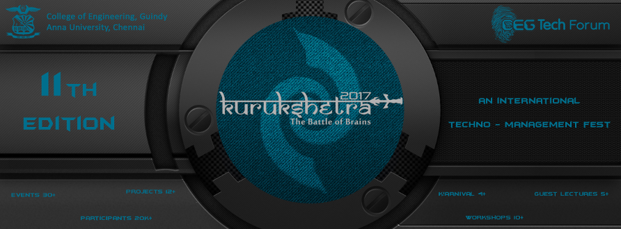
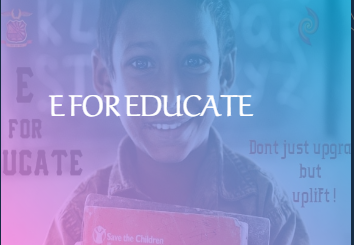

KURUKSHETRA 2017

Welcome to the official KURUKSHETRA website!
*Started in 2007, Kurukshetra was created to kindle the spark of creativity and innovation among the best brains in the country
*Over time, the fest has grown bigger and better, incorporating around 30+ Events, 10+ Workshops, 5+ Guest Lectures.
*Kurukshetra is the South India's biggest TECHNO-MANAGEMENT FESTIVAL.
*Come and join us at the College of Engineering Guindy, Anna University, Chennai for the 11th edition of Kurukshetra on the month of February 2017
K'17 HIGHLIGHTS
FEB 15
Dronce Racing
Cycle Stunts
FEB 16
Dronce Racing
Neon Run
Bike Stunts
FEB 17
Godspeed
k! awards
Robowars
Water Rocketry
FEB 18
Godspeed
Lantern
EVENTS!
Engineering
Robotics
Management
Quiz
Extravanganza
Coding
Online
TheDroneRace
Click here to register for an event!
WORKSHOPS!
General
Engineering
Robotics
Management
School
Carnival
Click here to register for a workshop!
k!ARNIVAL
k!ICKSTART k!ARNIVAL
#Cycle Stunt Show
#Cycle Stunt Show
Motorcycle stunt riding, often referred to as stunting, is a motorcycle sport characterized by stunts involving acrobatic maneuvering of the motorcycle and sometimes the rider. Common maneuvers in stunt riding include wheelies, stoppies, and burnouts.
#RC Car Racing
#RC Car Racing
Radio controlled (or R/C) cars are battery/gas-powered model cars or trucks that can be controlled from a distance using a specialized transmitter or remote. The term "R/C" has been used to mean both "remote controlled" and "radio controlled", where "remote controlled" includes vehicles that are connected to their controller by a wire, but common use of "R/C" today usually refers to vehicles controlled by a radio-frequency link. This article focuses on radio-controlled vehicles only.
#PS Gaming
#PS Gaming
PlayStation is a gaming brand that consists of four home video game consoles, as well as a media center, an online service, a line of controllers, two handhelds and a phone, as well as multiple magazines.
#3D Hologram
#3D Hologram
a hologram is a photographic recording of a light field, rather than of an image formed by a lens, and it is used to display a fully three-dimensional image of the holographed subject, which is seen without the aid of special glasses or other intermediate optics.
#VR Gaming
#VR Gaming
Virtual reality (VR) typically refers to computer technologies that use virtual reality headsets, sometimes in combination with physical spaces or multi-projected environments, to generate realistic images, sounds and other sensations that simulates a user's physical presence in a virtual or imaginary environment.
#Bike Stunt Show
#Bike Stunt Show
A basic wheelie is the lifting of the front of the motorcycle off the ground by means of either power or use of clutching.The "circle" is a wheelie performed traveling entirely within a circle, which is very difficult to do
GUEST LECTURES
The place where you meet great people, in action!
INITIATIVES AND THEME
Initiatives!


Theme
Climate change, also called global warming at times, refers to the rise in average surface temperatures on Earth.
In a nutshell, it occurs when long-term weather patterns are altered.Observations throughout the world make it clear that climate change is occurring, and rigorous scientific research demonstrates that the greenhouse gases emitted by human activities are the primary driver of this mass phenomenon.
The evidence is incontrovertible: Global warming is occurring. If no mitigating actions are taken, our way of life and the lives of future generations are at risk � be it through rising sea levels, more frequent natural disasters, loss of biodiversity or any of the host of consequences identified by the scientific community.
Despite the international scientific community's consensus on climate change, a small number of people continue to deny that climate change exists or that humans are causing it.
We think that the debate is over about whether or not climate change is real; it is now time to act to solve the problem. And Team Kurukshetra is doing just that. Through social initiatives, awareness drives, workshops, lectures, projects and much more, we are trying to do our part to fight climate change � and we ask you to join us.
k! Award Winners!
SHANTHI SOUNDARAJAN
Indian track and field athlete and winner of 12 international medals for India and around 50 medals for her home state of Tamil Nadu. She is the first Tamil woman to win a medal at the Asian Games.
SAJI THOMAS
A physically challenged person who cannot speak or hear and built an aircraft worth 14 lakhs despite that.
SRIRAM AND SUNDARAM
The creative team that runs a business making plates and saucers using bauhinia leaves.
SUBIK PANDIAN
An 8th grader who made toilets using water cans to help his friends in his school.
AARTHI
A 7thgrader who designed a tool to arrange bricks easily.
XCEED!
Distance must not be a barrier to spreading knowledge. Transcending geographical boundaries, Xceed serves as miniature version of Kurukshetra encompassing interesting events and workshops. Apart from bagging lots of prizes, the winners of Xceed get the enviable opportunity to be a part of the grand final stage at Kurukshetra. Quite simply, XCEED provides those beyond our state borders the chance to experience Kurukshetra first hand. Since 2008, XCEED has visited some of the top institutions in our country including IIM Ahmedabad, IIM Bangalore and IIT Kanpur among others.
BATTLE OF BOTS!
"Battle does not determine who is right - only who is left.Eight cities. One champion. No machine is safe in the Battle of Bots. Xceed's Battle of Bots, a nationwide robotics championship with prizes worth 1 Lakh, for Kurukshetra 2017 is coming to a city near you. Do you have what it takes to win them all?
HOSPITALITY
Kurukshetra has been witnessing participants from all over the country and even beyond, and there are also speakers and guests coming from various walks of life. Ever wondered where they stay during the days of Kurukshetra? Let’s find out from the Hospitality team of CEG Tech Forum, as the Student Directors
REACH US
pr@kurukshetra.org.in
+91 44 2235 9002
+91 78455 31020
+91 76671 34126